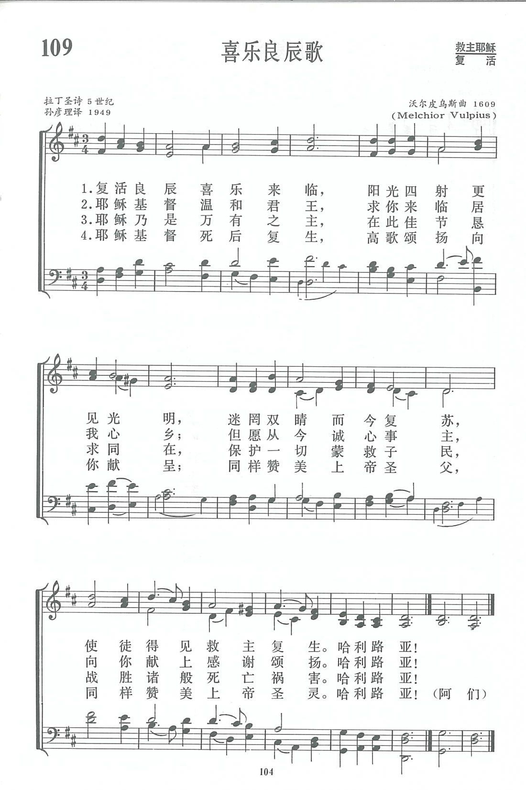
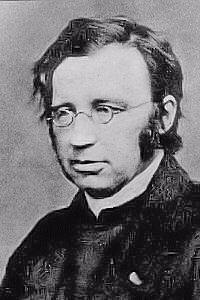
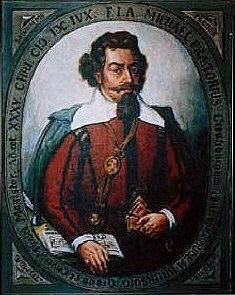

|
|
新编赞美诗 109 喜乐良辰歌 |
|
Joy dawned again on Easter Day, 1 That Easter day with joy was bright: 2 His risen flesh with radiance glowed, 3 O Jesus, King of gentleness, 4 O Lord of all, with us abide |
|
|
https://www.zanmeishige.com/tab/13782.html?songbook=1&index=109

That Easter Day with Joy Was Bright
|
|
|
|
|


https://youtu.be/xF422WKc9Kc -
Joy Dawned Again on Easter Day · Altar of Praise Chorale
https://youtu.be/K1Z1e7A83s4 -
The Tabernacle Choir and Orchestra at Temple Square perform the German hymn
tune, "That Easter Day with Joy Was Bright," arranged by Mack Wilberg.
https://www.youtube.com/watch?v=5mdwBPW2r7c
| Text: | That Easter Day with Joy Was Bright |
| Translator: | John M. Neale, 1818-1866 |
| Tune: | PUER NOBIS |
| Adapter: | Michael Praetorius, 1571-1621 |
| Harmonizer: | George R. Woodward, 1848-1934 |

Notes
Aurora lucis
rutilat. [Easter.] This hymn is ascribed to St.
Ambrose, but was not received among his undoubted works by the
Benedictine editors. In rendering the hymn into English some translators
have given the text in full, whilst others have taken a part only.
This translation by Dr. Neale, in two parts, was published in the Hymnal
Noted, in 1852, and continued in later editions. Pt. i. consists of
lines 1-20, and 4 lines, and a doxology not in the original, but in the Sarum
Breviary, pt. ii. of lines 21-44, and the closing lines of pt. i.
repeated.
In 1861, the Compilers of Hymns Ancient & Modern gave
this rendering in that collection with rather extensive alterations, and
rearranged in three parts, thus:—
i. Aurora
lucis rutilat. "Light's glittering morn bedecks the sky.
ii. Tristes erant Apostoli. "The Apostles' hearts
were full of pain."
iii. Claro Paschali gaudio. "That Eastertide with
joy was bright."
-- Excerpts from John Julian, Dictionary of Hymnology (1907)
Tune Information
| Title: | PUER NOBIS NASCITUR |
| Composer: | Michael Praetorius |
| Meter: | 8.8.8.8 |
| Incipit: | 11234 32115 55671 |
| Key: | D Major |
| Source: | Latin carol, 16th cent.;European tune, 15th century |
| Copyright: | Public Domain |
| Short Name: | Michael Praetorius |
| Full Name: | Praetorius, Michael, 1571-1621 |
| Birth Year: | 1571 |
| Death Year: | 1621 |

Born into a staunchly Lutheran family, Michael Praetorius (b. Creuzburg, Germany, February 15, 1571; d. Wolfenbüttel, Germany, February 15, 1621) was educated at the University of Frankfort-an-der-Oder. In 1595 he began a long association with Duke Heinrich Julius of Brunswick, when he was appointed court organist and later music director and secretary. The duke resided in Wolfenbüttel, and Praetorius spent much of his time at the court there, eventually establishing his own residence in Wolfenbüttel as well. When the duke died, Praetorius officially retained his position, but he spent long periods of time engaged in various musical appointments in Dresden, Magdeburg, and Halle. Praetorius produced a prodigious amount of music and music theory. His church music consists of over one thousand titles, including the sixteen-volume Musae Sionae (1605-1612), which contains Lutheran hymns in settings ranging from two voices to multiple choirs. His Syntagma Musicum (1614-1619) is a veritable encyclopedia of music and includes valuable information about the musical instruments of his time.
Bert Polman
Notes
PUER NOBIS is a melody from a fifteenth-century manuscript from Trier. However, the tune probably dates from an earlier time and may even have folk roots. PUER NOBIS was altered in Spangenberg's Christliches GesangbUchlein (1568), in Petri's famous Piae Cantiones (1582), and again in Praetorius's (PHH 351) Musae Sioniae (Part VI, 1609), which is the basis for the triple-meter version used in the 1987 Psalter Hymnal. Another form of the tune in duple meter is usually called PUER NOBIS NASCITUR. The tune name is taken from the incipit of the original Latin Christmas text, which was translated into German by the mid-sixteenth century as "Uns ist geborn ein Kindelein," and later in English as "Unto Us a Boy Is Born." The harmonization is from the 1902 edition of George R. Woodward's (PHH 403) Cowley Carol Book.
PUER NOBIS is a splendid tune in arch form that lifts and then propels itself along to its final note. Try having the choir sing stanzas 1 and 2 in unison. Then all could sing stanzas 3 and 4 in unison with the choir providing the harmony. Stanza 4 could also be sung in canon at one measure, with either a strictly unison accompaniment or one composed to accommodate the canon. All worshipers could sing stanza 5 in unison again. Use a rather light organ registration, but change to a full one for stanza 5.
--Psalter Hymnal Handbook, 1988
第109首 喜乐良辰歌 Joy dawned again on Easter Day _M．Vulpius
经文：“七日的第一日清早,天还黑的时候，抹大拉的马利亚来到坟墓那里，看见石头从坟墓挪开了……”(约20：1)。
这是一首4世纪到5世纪的拉丁圣诗。有人说它是安布罗斯所写，曲调是魏玛信义会沃尔皮乌斯(M．Vulpius，1560一1616)所谱。他曾任魏玛大教堂乐监(见第10首注①)14年，是德国有名的古典作曲家之一，曾发表过四至八声部教堂音乐若干卷并谱写了一部《马太受难曲》。他所谱的众赞歌曲调(见第6首注②)有好几首至今仍在各国教会中唱颂。调名《GELOBT SEI GOTT》，原是沃氏所作圣诗的德文首句。
这首《喜乐良辰歌》是上海孙彦理主教于1949年所翻译的，曾登载于《儿童圣诗及崇拜文》上。
孙彦理现任上海市基督教教务委员会主席、华东神学院院长、上海沐恩堂顾问牧师，中国基督教协会常委。他出生于1914年，15岁受洗，1934年进南京金陵神学院学习。三年后由于抗战爆发，辗转至内地成都，一面完成学业，一面在成都教会工作，于1941年按立为牧师。1946年他回到上海，历任海涵堂(在原中西女中内)、景林堂、沪西礼拜堂主任牧师，并曾担任卫理公会上海教区的教区长。1988年在上海被祝圣为主教。他一向爱好音乐，他那浑厚的男低音常给信徒留下深刻印象。《新编》编辑委员会成立时，他被邀担任委员并请他写稿。为了积极支持这项工作，他在灯下动笔琢磨写至深夜。
《新编》除收集他这首翻译圣诗外，还选用了135、177、189、309等四首创作的圣诗。
https://www.xueshengshi.com/?p=6203